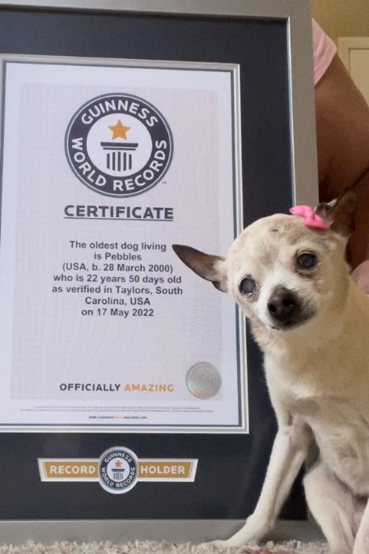
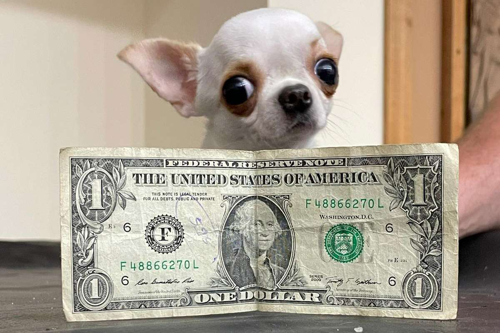
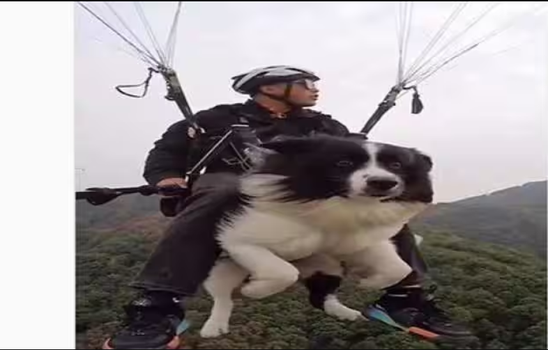
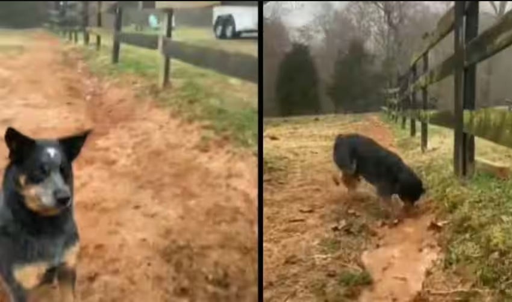

World’s oldest dog living confirmed as 22-year-old Toy Fox Terrier.

The oldest dog living is Gino Wolf (USA, b. 24 September 2000), who is 22 years 52 days as verified in Los Angeles, California, USA, on 15 November 2022.
Gino was adopted by Alex Wolf in Boulder, Colorado, in 2002. "I've taken great care of him over the years and he is still in relatively very good shape...and really cute still which is surprising considering his age!"
Meet Pearl, the pocket-sized chihuahua named shortest dog by Guinness World Records

Measuring at 3.59 inches tall and just five inches in length, Pearl is shorter than a popsicle stick and around the same size as a dollar bill, according to the Guinness World Records. When the chihuahua was born in September 2020 at Crystal
Creek Animal Hospital in Orlando, Florida, she weighed less than an ounce at birth.
Viral Video: Pet Dog goes Paragliding with owner, netizens react

Many social media users are outraged after seeing a video of a dog paragliding with its owner.
The now-viral Instagram video demonstrates the four-legged furry ball being properly tethered for flight together with its owner. The man used a GoPro to capture the entire journey.
The pair paragliding was included in a few wide Instagram Reels photos as well. They successfully touched down on the ground at the end of the video.
This 'intelligent' dog's digging skills goes viral, netizens say can solve Suez Canal blockade

A new hilarious video of an Australian cattle dog is going viral on social media, it is an energetic dog who seems good at digging an irrigation trench and guiding water.
The 59-second video was uploaded on a Twitter page, named, 'Humour and Animals', that shared the video of a dog digging the water channel.
 Saving Animals
Saving Animals